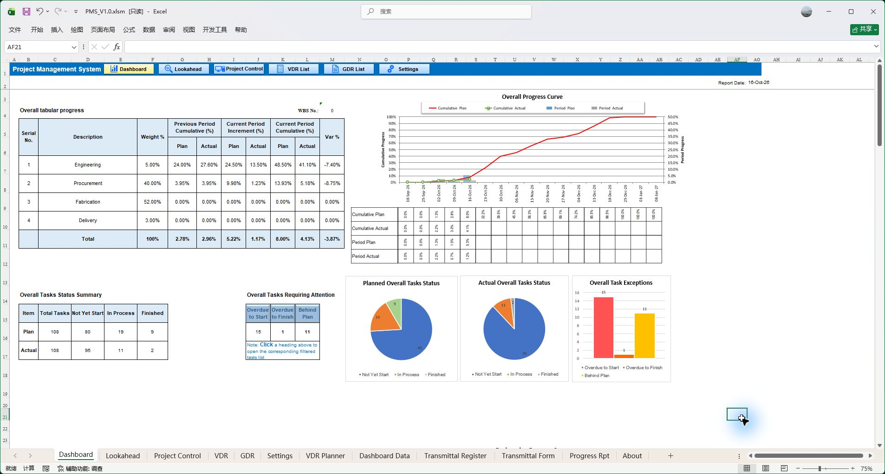
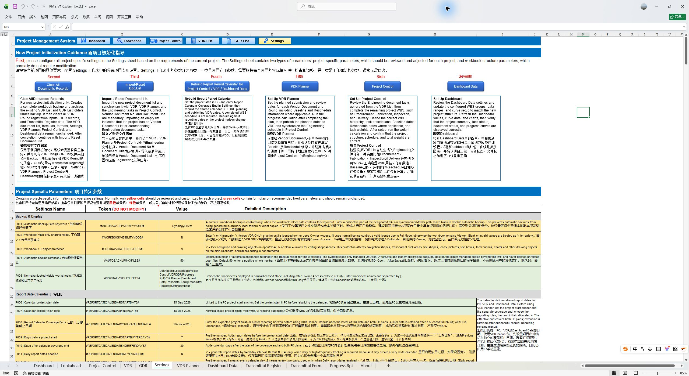

Dashboard
总览设计、采购、制造与交付的计划、实际进度和关注事项。
从设计、采购到制造，将项目计划、文件管理、执行跟踪、进度控制与管理报告连接在一个工作簿中。少一些多表搬运与反复核对，更快看清项目状态，推动下一步工作。
未注册模板 · Viewer 模式 · Windows Excel 2013 及以上

总览设计、采购、制造与交付的计划、实际进度和关注事项。

按时间窗口找到近期、逾期和落后工作，从项目状态走到具体行动。

以 WBS、任务权重与前置关系，组织整个项目的计划和实际执行。

关联工程文件的版本、提交、审查与往来记录，为进度控制提供依据。

从项目初始化指引和基础参数开始，建立计划、文件和报告的统一配置。
PMS V1.0 实际截图 · 五个核心界面，了解一套完整的项目管理架构。
项目经理需要同时掌握任务之间的依赖、文件往来的状态、实际完成情况和本期报告口径。PMS 用 WBS 连接各项工作，让这些信息在同一套项目架构中衔接。
WBS 组织项目工作；文件计划、执行记录和进度数据按各自流程衔接，服务同一套项目控制与报告。
按 WBS 组织任务，以前置关系安排先后顺序，分别维护基准计划与重排计划。工程文件的计划节点也能作为后续采购、制造任务的排程依据。
了解整体项目计划任务实际进度、文件往来、进度计算、看板、前瞻和周期报告形成关联。减少为不同报表反复复制、拼接与核对数据。
了解进度与历史数据文件提交、审查与重提按项目规则形成进度，再汇总到对应 WBS。文件的状态和整个项目的推进联系起来。
了解文件与进度的关系文件类型、审查 Code、进度计取、工作日历、文件识别与报告周期均可配置，适应项目的具体要求。
了解项目配置Dashboard 查看总体、专业与类别状态；Lookahead 聚焦近期、逾期和落后工作，并定位源记录，支持追问、协调和推动。
了解看板与前瞻沿着五个环节了解模块之间的关系。各环节按工作需要录入、发布、记录和刷新，下面展示的是业务流程。
在 Project Control 建立 WBS、任务权重与前置关系，安排设计、采购和制造任务。VDR Planner 细化文件提交、审查与重提节点，并向 VDR 和 PC 单向发布文件计划。
阅读对应操作说明整体任务与文件节点有共同的项目计划框架。
维护采购、制造等普通任务的实际日期与进度；在 VDR 管理工程文件提交、审查与分供方来文，在 GDR 管理技术澄清、会议纪要等事项，配合归档和传送单。
阅读对应操作说明不同类型的项目工作，保留各自清楚的执行依据。
工程文件按类型、提交和审查 Code 等规则计量；普通任务维护实际进度。两类数据按 WBS 权重汇总，再按报告日期记录本期实际；有补录或修正时，可按流程重算历史。
阅读对应操作说明总体进度有组成，本期与历史有各自的维护方式。
用 Dashboard 查看总体、专业与类别表现及偏差；用 Lookahead 按时间窗口查找近期、未按时开始、逾期或落后工作，并定位到相应任务或文件记录。
阅读对应操作说明从项目全貌走到具体问题，支持协调与推进。
围绕报告日期与计划口径，组织 Baseline、Re-schedule、Actual 曲线和分期进度，配合管理说明形成周期报告。日、周、双周和月度等周期可以按项目设置。
阅读对应操作说明计划、执行、进度与报告保持明确的数据联系。
设计文件影响后续采购与制造。PMS 一方面规划文件的提交与审查节点，另一方面将实际往来按规则计量，连接工程文件工作与总体项目控制。
维护实际日期与累计进度
采购、制造等任务按提交、返回与 Code 规则计量
VDR 文件执行记录按 WBS 层级与权重汇总 → 项目进度 → 看板、曲线与报告
深入了解进度计量WBS、前置关系、工作日历和甘特图，帮助组织设计、采购与制造任务。
分别维护 Baseline 与 Re-schedule，以选定计划口径对照独立的实际执行数据。
对照计划与实际，用关注项筛选和 Lookahead 查询定位到具体任务。
从实际记录与任务进度汇总，按报告日期、计划口径和周期组织曲线与报告。
最耗时间的，有时并不是作出决定，而是先把作出决定所需的信息找齐。
一名石化装备行业项目经理，从减少文件整理的重复劳动出发，在数年的实际工作中，逐步把项目计划、文件往来、进度控制和管理报告连接起来。工具的成长，源于项目管理中需要解决的问题。
阅读 PMS 的由来尤其适合装备供货、石化装备及工程制造项目。没有设计文件的项目，也可使用 Project Control 管理采购、制造及其他任务。
Windows 桌面版 Excel 2013 及以上，按要求启用宏。保留单元格、公式与表格操作；VBA 承担排程、文件处理、计算和报告等重复工作。工作簿为英文界面。
未注册模板进入 Viewer。浏览项目数据、看板及允许的查看功能，了解后再购买完整功能。
下载未注册工作簿，在 Viewer 中浏览项目数据、看板及允许的查看功能。完整功能需要有效的设备授权。